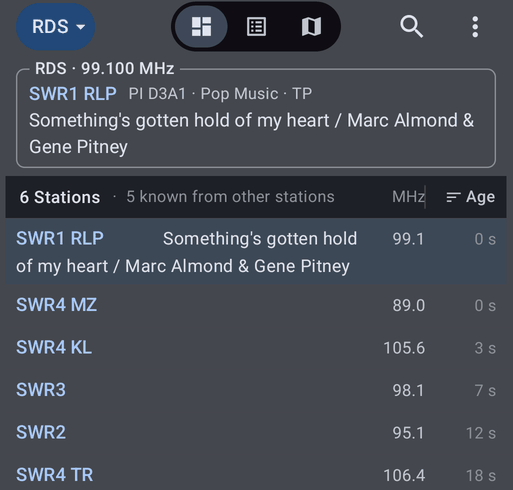
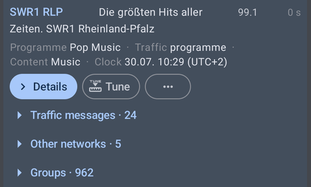
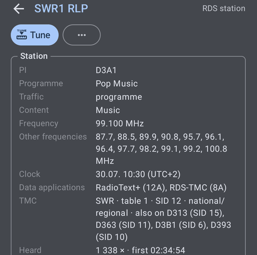
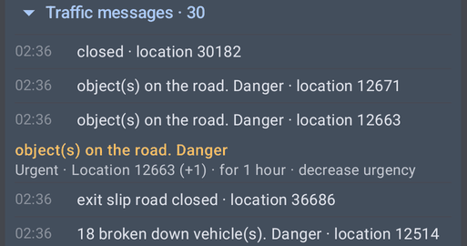
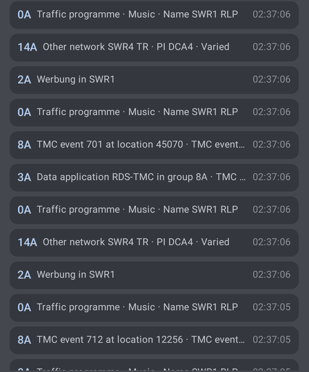

RDS (Broadcast FM)
RDS (Radio Data System) is the data signal FM broadcast stations send along with their programme: the station name your car radio shows, the radio text with the song and artist, the programme type, the time, the other frequencies of the same programme - and in many countries TMC, coded traffic messages for navigation systems.
RF Analyzer decodes RDS while you listen to a station in the FM (wide) mode, lists the stations it heard and what they sent, and decodes the traffic messages. It only receives. Any SDR that covers 87.5-108 MHz works. RDS is part of the Digital Extension, which must be installed.
How RDS Works
An FM station sends RDS as a quiet data signal at 57 kHz in its FM multiplex,
above the stereo signal - at 1187.5 bit/s, about 11 groups per second. Each
group is 104 bits: four blocks, each with its own error check. The first block
of every group is the station's PI code (programme identification), four
hex digits like D3A1: the same programme has the same PI code on all its
frequencies. The second block says which group type it is; each type
carries one kind of information:
| Group | Content |
|---|---|
| 0A, 0B | Station name (PS, 8 characters, sent in four parts), traffic flags (TP/TA), music/speech; 0A also the alternative frequencies (AF) |
| 2A, 2B | Radio text (up to 64 characters), sent in parts |
| 3A | Announces which group carries an application, for example traffic messages (TMC) in 8A |
| 4A | Date and time, about once a minute |
| 8A | TMC traffic messages |
| 14A | Other networks (EON): name, programme type, traffic flags and frequencies of other programmes of the same broadcaster |
| others | Programme item numbers, radio paging, RadioText+ (song title and artist as separate fields), programme type names, ... - counted, but not decoded |
Programme types (PTY) are numbers with names: 10 is "Pop Music" in Europe. The US (RBDS) uses another list; RDS Programme Types in the Demodulation tab picks the list of your country automatically (see Location), or set it there by hand.
TP (traffic programme) means the station broadcasts traffic announcements; TA (traffic announcement) is set while one is on air.
Getting Started
The quickest way to start is the mode button in the header of the Digital tab: tap it, then Start next to RDS. RF Analyzer selects FM (wide) with Stereo & RDS switched on and tunes to the FM band (staying on your station if you are already listening to one).
By hand: select FM (wide) in the Demodulation tab, switch on Stereo & RDS and tune to a station (see Stereo & RDS). RDS needs a reasonably strong signal; the station name usually appears within a few seconds.
In the Digital Tab
The decoded data shows up in the Digital tab under the mode RDS. That page explains the controls all modes share; here is what RDS's rows and cards mean.
Overview

While RDS is received, the ticker shows the station you are listening to: its name, PI code, programme type, the traffic flags, and its radio text.
The Overview lists every station, one row per PI code: its name, its radio text and its frequency (MHz). The station being received is pinned on top with a light background. Stations that your station announces as other networks (EON) are listed too, with the first frequency announced for them; the summary counts them ("5 known from other stations"). Sort by Last heard, Groups (how many groups were received from it), Name or Frequency.
A station

Tap a station to open it:
- Programme: the programme type; Traffic: whether it is a traffic programme and whether an announcement is on now; Content: music or speech; Clock: the station's date and local time, with its offset from UTC.
- Tune switches the receiver to the station's frequency.
- Traffic messages: the TMC messages the station currently broadcasts (see below).
- Other networks: the other programmes it announces, each with its frequencies; tap a frequency to tune to it.
- Groups: how many groups of each type were received, with what the newest one said. Tap a type to see that group.
Details shows everything on one page: PI code, all alternative frequencies (Other frequencies), the Data applications the station announces (RadioText+, RDS-TMC, …) and its TMC service: the provider, the location table, the service ID and the other stations that carry the same service.

Traffic messages (TMC)

Each line is one message: the event in words ("exit slip road closed", "18 broken down vehicle(s). Danger") and the location code it applies to. Tap a message for its details: the urgency (urgent messages in orange, extremely urgent in red), how many further locations it covers (+1), the direction, how long it is expected to last, and further hints like a diversion or a speed limit.
The locations are numbers in the national location table of your country (the navigation system translates them into road and junction); RF Analyzer shows the numbers. A message stays in the list while the station repeats it, and disappears when it expires or isn't repeated for half an hour.
Groups

The Raw view shows every group as a card: its type and what it said ("0A Traffic programme · Music · Name SWR1 RLP"). There are about 11 per second, so RF Analyzer keeps only the newest 20 000 (about half an hour of one station). While RDS is received, the list moves constantly; scroll down a little first, then it holds still and you can open a card. An opened card shows each decoded field and, under Blocks, the four blocks as hex and bits.
Tips & Troubleshooting
- No RDS: check that Stereo & RDS is on, and that the station is strong (the stereo pilot and RDS need more signal than mono audio). Not every station sends RDS.
- The station name changes all the time: some stations scroll text through the 8-character name field. RF Analyzer shows what was received last.
- Radio text with gaps: the text is sent in parts; missing parts are filled in as they arrive.
- Wrong programme type names: check your Location, or set RDS Programme Types in the Demodulation tab by hand. The stored stations are renamed too.